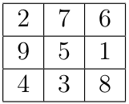

Un cuadrado mágico de orden n, es un cuadrado con los números \(\left\{ 1,...,n² \right\}\), tal que todas sus filas, columnas y las dos diagonales suman lo mismo (ver figura). El número que suma cada fila es llamado número mágico.

Existen muchos métodos para generar cuadrados mágicos. El objetivo de este ejercicio es contar cuántos cuadrados mágicos de orden n existen.
a) ¿Cuántos cuadrados habría que generar para encontrar todos los cuadrados mágicos si se utiliza una solución de fuerza bruta?
Rta: Habría que generar \(n^{2}!\) cuadrados.
b) Enunciar un algoritmo que use backtracking para resolver este problema que se base en la siguientes ideas:
La solución parcial tiene los valores de las primeras \(i - 1\) filas establecidos, al igual que los valores de las primeras j columnas de la fila i.
Para establecer el valor de la posición \((i,j + 1)\) (o \((i + 1,1)\) si \(j = n\) e \(i \neq n\)) se consideran todos los valores que aún no se encuentran en el cuadrado. Para cada valor posible, se establece dicho valor en la posición y se cuentan todos los cuadrados mágicos con esta nueva solución parcial.
Mostrar los primeros dos niveles del árbol de backtracking para n = 3.
M = matriz n^2 de ceros
U = {}
res = 0
f mc(i, j):
si i > n:
si es cuadrado mágico:
res += 1
return
for k en 1...n^2:
si k no está en U:
M[i][j] = k
U.push(k)
si j = n e i != n:
i' = i+1
j' = 1
si j < n:
i' = i
j' = j+1
mc(i', j') #el backtrack!
U.pop(k)
M[i][j] = 0
Primeros 2 niveles del árbol de backtracking \(\leftarrow\)
c) Demostrar que el árbol de backtracking tiene \(O\left( n^{2}! \right)\) nodos en peor caso.
Nota: Cada nodo es \(O(1)\) en este caso.
El \(k - \text{ésimo}\) nivel del árbol de recursión tiene \(k\) posiciones ocupadas y \(n^{2} - k\) sin usar, esto significa que en el \(k - \text{ésimo}\) nivel tenemos
\[n^{2} \cdot \left( n^{2} - 1 \right) \cdot \ldots \cdot \left( n^{2} - k + 1 \right) = \frac{n^{2}!}{\left( n^{2} - k \right)!}\text{ nodos en la altura k }\]
Y en total tenemos \(n^{2}\) nodos niveles, por lo que tendremos
\[\sum_{k = 0}^{n^{2}}\frac{n^{2}!}{\left( n^{2} - k \right)!}\text{ nodos totales }\]
Y el término dominante es \(n^{2}!\), por lo que es \(O\left( n^{2}! \right)\) (que de hecho, es el número de hojas)
Nota de color: si quisieramos formalizar más, podríamos decir que:
\[\sum_{k = 0}^{n^{2}}\frac{n^{2}!}{\left( n^{2} - k \right)!} = n^{2}! \cdot \sum_{k = 0}^{n^{2}}\frac{1}{\left( n^{2} - k \right)!}\]
Luego, el segundo término no es más que los primeros \(n^{2}\) términos de la serie de Euler, Entonces:
\[\sum_{k = 0}^{n^{2}}\frac{1}{\left( n^{2} - k \right)!} \approx e\]
Y entonces nos queda
\[\sum_{k = 0}^{n^{2}}\frac{n^{2}!}{\left( n^{2} - k \right)!} \approx e \cdot n^{2}!\text{ y esto es }O\left( n^{2}! \right)\]
d) Considere la siguiente poda al árbol de backtracking: al momento de elegir el valor de una nueva posición, verificar que la suma parcial de la fila no supere el número mágico. Verificar también que la suma parcial de los valores de las columnas no supere el número mágico. Introducir estas podas al algoritmo e implementarlo en la computadora. ¿Puede mejorar estas podas?
Se podría mejorar chequeando las diagonales, otra poda posible es ver si los \(k\) elementos restantes podrían llegar a sumar el restante necesario del número mágico.
e) Demostrar que el número mágico de un cuadrado mágico de orden n es siempre \(\frac{n^{3} + n}{2}\). Adaptar la poda del algoritmo del ítem anterior para que tenga en cuenta esta nueva información. Modificar la implementación y comparar los tiempos obtenidos para calcular la cantidad de cuadrados mágicos.
Llamemos al número mágico: \(🎩\)
Tenemos exactamente \(n\) filas, \(n\) columnas, alcanza ver que \(n\) filas ó columnas suman el número mágico.
Entonces tenemos \(n\) columnas tal que cada una suma \(🎩\), esto vale exactamente \(n \cdot 🎩\), pero también sabemos que cada número del magicuadrado es diferente y tenemos en total los primeros \(n^{2}\) naturales, esto es:
\[\sum_{i = 1}^{n^{2}}i\underset{\text{gauss}}{=}\frac{n^{2}\left( n^{2} + 1 \right)}{2}\]
Entonces nos queda que:
\[n \cdot 🎩 = \frac{n^{2}\left( n^{2} + 1 \right)}{2} \Longleftrightarrow 🎩 = \frac{n^{2}\left( n^{2} + 1 \right)}{2 \cdot n} = \frac{n\left( n^{2} + 1 \right)}{2} = \frac{n^{3} + n}{2}\]
Como queríamos probar (análogo para filas obviamente)
{kind=link}